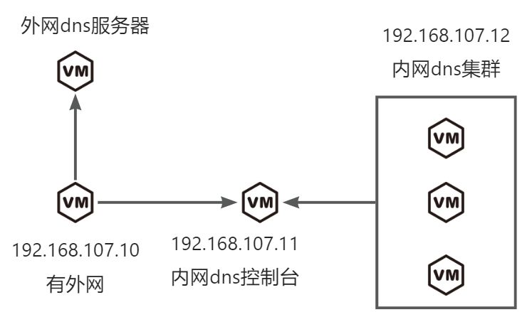
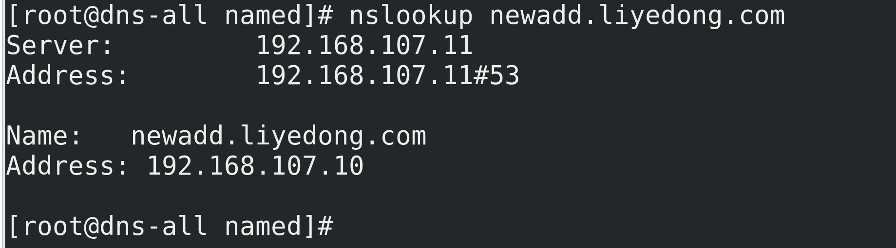
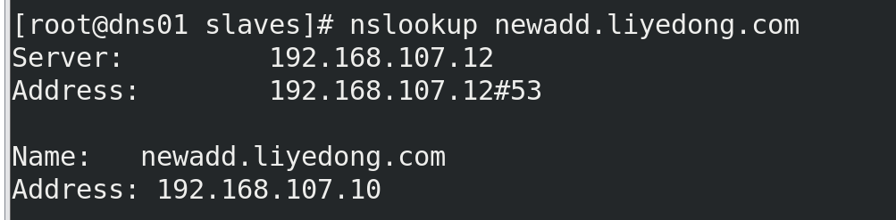

RHEL8搭建dns服务
架构设计

测试环境规划
| 主机名 |
ip |
操作系统 |
dns |
| dns-out.liyedong.com |
192.168.107.10 |
RHEL8 |
223.5.5.5 223.6.6.6 |
| dns-all.liyedong.com |
192.168.107.11 |
RHEL8 |
192.168.107.11 |
| dns01.liyedong.com |
192.168.107.12 |
RHEL8 |
192.168.107.12 |
安装软件包.
每个节点都执行
| Bash |
|---|
| dnf update
dnf install bind bind-utils -y
|
配置
dns-out.liyedong.com配置
| Bash |
|---|
| vim /etc/named.conf
options {
listen-on port 53 { 127.0.0.1; 192.168.107.10; };
directory "/var/named";
allow-query { any; };
dump-file "/var/named/data/cache_dump.db";
statistics-file "/var/named/data/named_stats.txt";
memstatistics-file "/var/named/data/named_mem_stats.txt";
recursion no; # 不处理内部解析请求
forwarders { 223.5.5.5;223.6.6.6; }; # 阿里云的公共 DNS 服务器
forward only; # 仅转发请求，不处理其他解析
};
logging {
channel default_debug {
file "data/named.run";
severity dynamic;
};
};
zone "." IN {
type hint;
file "named.ca";
};
#include "/etc/named.rfc1912.zones";
#include "/etc/named.root.key";
|
| Bash |
|---|
| systemctl start named
systemctl enable named
|
dns-all.liyedong.com配置
| Bash |
|---|
| vim /etc/named.conf
options {
listen-on port 53 { 127.0.0.1; 192.168.107.11; };
directory "/var/named";
allow-query { any; };
forwarders { 192.168.107.10; };
recursion yes;
};
zone "liyedong.com" IN {
type master;
file "liyedong.com.zone";
};
logging {
channel default_debug {
file "data/named.run";
severity dynamic;
};
};
#include "/etc/named.rfc1912.zones";
#include "/etc/named.root.key";
|
| Bash |
|---|
| vim /var/named/liyedong.com.zone
$TTL 86400
@ IN SOA dns-all.liyedong.com. admin.liyedong.com. (
2024073012 ; Serial
3600 ; Refresh
1800 ; Retry
1209600 ; Expire
86400 ) ; Minimum TTL
;各个从节点同步host
@ IN NS dns01.liyedong.com.
@ IN NS dns-all.liyedong.com.
; 地址记录
dns-out IN A 192.168.107.10
dns-all IN A 192.168.107.11
dns01 IN A 192.168.107.12
esxi01 IN A 192.168.107.10
lydtest IN A 192.168.107.10
lydpp IN A 192.168.107.10
|
| Bash |
|---|
| systemctl start named
systemctl enable named
|
dns01.liyedong.com配置
| Bash |
|---|
| options {
listen-on port 53 { 127.0.0.1; 192.168.107.12; };
directory "/var/named";
allow-query { any; };
recursion yes;
};
zone "liyedong.com" IN {
type slave;
file "slaves/liyedong.com.zone";
masters { 192.168.107.11; }; # 从内网 DNS 总控制台同步
};
logging {
channel default_debug {
file "data/named.run";
severity dynamic;
};
};
#include "/etc/named.rfc1912.zones";
#include "/etc/named.root.key";
|
| Bash |
|---|
| systemctl start named
systemctl enable named
|
测试
在dns-all这台虚拟机上执行
| Bash |
|---|
| vim /var/named/liyedong.com.zone
$TTL 86400
@ IN SOA dns-all.liyedong.com. admin.liyedong.com. (
2024073013 ; Serial #修改一次这个序列号才会更新
3600 ; Refresh
1800 ; Retry
1209600 ; Expire
86400 ) ; Minimum TTL
;各个从节点同步host
@ IN NS dns01.liyedong.com.
@ IN NS dns-all.liyedong.com.
; 地址记录
dns-out IN A 192.168.107.10
dns-all IN A 192.168.107.11
dns01 IN A 192.168.107.12
esxi01 IN A 192.168.107.10
lydtest IN A 192.168.107.10
lydpp IN A 192.168.107.10
newadd IN A 192.168.107.10 #新增
|
| Bash |
|---|
| rndc reload #更新节点
nslookup newadd.liyedong.com
|

在dns01这台虚拟机上执行
| Bash |
|---|
| nslookup newadd.liyedong.com
|

查看tcp和递归客户端数
手动同步主节点某个zone区域
bind9.18.36安装部署
| Bash |
|---|
| curl -o /etc/pki/rpm-gpg/RPM-GPG-KEY-rockyofficial https://dl.rockylinux.org/pub/rocky/RPM-GPG-KEY-rockyofficial
tee /etc/yum.repos.d/bind9.repo << 'EOF'
[copr:copr.fedorainfracloud.org:isc:bind-esv]
name=Copr repo for bind-esv owned by isc
baseurl=https://download.copr.fedorainfracloud.org/results/isc/bind-esv/epel-8-$basearch/
type=rpm-md
skip_if_unavailable=True
gpgcheck=1
gpgkey=https://download.copr.fedorainfracloud.org/results/isc/bind-esv/pubkey.gpg
repo_gpgcheck=0
enabled=1
enabled_metadata=1
EOF
#'EOF'代表的是不转义变量$
tee /etc/yum.repos.d/rocky.repo << 'EOF'
[baseos]
name=Rocky Linux $releasever - BaseOS
mirrorlist=https://mirrors.rockylinux.org/mirrorlist?arch=$basearch&repo=BaseOS-8
# 或者使用下面这个单一镜像站点（速度更快）
# baseurl=http://mirrors.rockylinux.org/rocky/$releasever/BaseOS/$basearch/os/
enabled=1
gpgcheck=1
gpgkey=file:///etc/pki/rpm-gpg/RPM-GPG-KEY-rockyofficial
[appstream]
name=Rocky Linux $releasever - AppStream
mirrorlist=https://mirrors.rockylinux.org/mirrorlist?arch=$basearch&repo=AppStream-8
# baseurl=http://mirrors.rockylinux.org/rocky/$releasever/AppStream/$basearch/os/
enabled=1
gpgcheck=1
gpgkey=file:///etc/pki/rpm-gpg/RPM-GPG-KEY-rockyofficial
[extras]
name=Rocky Linux $releasever - Extras
mirrorlist=https://mirrors.rockylinux.org/mirrorlist?arch=$basearch&repo=extras-8
enabled=1
gpgcheck=1
gpgkey=file:///etc/pki/rpm-gpg/RPM-GPG-KEY-rockyofficial
[plus]
name=Rocky Linux $releasever - Plus
mirrorlist=https://mirrors.rockylinux.org/mirrorlist?arch=$basearch&repo=plus-8
enabled=0
gpgcheck=1
gpgkey=file:///etc/pki/rpm-gpg/RPM-GPG-KEY-rockyofficial
[crb]
name=Rocky Linux $releasever - CodeReady Builder
mirrorlist=https://mirrors.rockylinux.org/mirrorlist?arch=$basearch&repo=CRB-8
enabled=0
gpgcheck=1
gpgkey=file:///etc/pki/rpm-gpg/RPM-GPG-KEY-rockyofficial
EOF
|
| Bash |
|---|
| hostnamectl set-hostname dns-master.liyedong.com
hostnamectl set-hostname dns-outside.liyedong.com
hostnamectl set-hostname dns-slave01.liyedong.com
[root@localhost ~]# cat /root/.ssh/id_rsa.pub
ssh-rsa AAAAB3NzaC1yc2EAAAADAQABAAABgQDm10iLFs0fGhKFDJ+Yk4eqMVDlCROHRhfI0MoHiXBZTt9EbRe75m03V0wYWO7MWs4aZjaPBNUkTtFodQshcbjTHBjNiVD5nmFXq6aWp5woOCL9lqqsp2OJbUssrnc9ynyEL4vpivoz054YH+zZkg96OiUoxt4kr8hDZQ+3BPN+jeke3xuvU9ioXwaxFX3jouwI7eq3BDJcbj4j4qob3XUFn6kPIys8+zapwmxrNXZWAm03/S8MqGcJnvzFsUrjQo+fGkeZ6xTURzI3HbWc8Xs/bWyKTESgIhJZHOople0v4haw634sRTkRievyb3MlJmSudUbFFpccKfedwrPpANhEt+aNxmvwZEosshuvsywMqPXtpgcousPUM5y3hQWj9lgKf6NHoLNKC3FAE5BYJU9/Eiwm3pdM3w28gTWPJ/U8Jq3BWqqG3M2RyQzH3Oflm8VkibMEEQ4pAHbtej1wIoyjOPbWhL9Y7IOWdLUktg/DXSCrmXe+XxZqIWjqTOYj3Ek= root@dns-master.liyedong.com
#复制到所有节点执行
mkdir -p ~/.ssh
chmod 700 ~/.ssh
tee -a ~/.ssh/authorized_keys << 'EOF'
ssh-rsa AAAAB3NzaC1yc2EAAAADAQABAAABgQDm10iLFs0fGhKFDJ+Yk4eqMVDlCROHRhfI0MoHiXBZTt9EbRe75m03V0wYWO7MWs4aZjaPBNUkTtFodQshcbjTHBjNiVD5nmFXq6aWp5woOCL9lqqsp2OJbUssrnc9ynyEL4vpivoz054YH+zZkg96OiUoxt4kr8hDZQ+3BPN+jeke3xuvU9ioXwaxFX3jouwI7eq3BDJcbj4j4qob3XUFn6kPIys8+zapwmxrNXZWAm03/S8MqGcJnvzFsUrjQo+fGkeZ6xTURzI3HbWc8Xs/bWyKTESgIhJZHOople0v4haw634sRTkRievyb3MlJmSudUbFFpccKfedwrPpANhEt+aNxmvwZEosshuvsywMqPXtpgcousPUM5y3hQWj9lgKf6NHoLNKC3FAE5BYJU9/Eiwm3pdM3w28gTWPJ/U8Jq3BWqqG3M2RyQzH3Oflm8VkibMEEQ4pAHbtej1wIoyjOPbWhL9Y7IOWdLUktg/DXSCrmXe+XxZqIWjqTOYj3Ek= root@dns-master.liyedong.com
EOF
chmod 600 ~/.ssh/authorized_keys
tee -a /etc/hosts << 'EOF'
192.168.10.20 dns-master
192.168.10.21 dns-outside
192.168.10.22 dns-slave01
EOF
|
| Bash |
|---|
| scp -r ansible.tar.gz root@192.168.10.20:/root
tar -xzf ansible.tar.gz -C /opt/
cp /opt/ansible/*.sh /etc/profile.d/
source /etc/profile.d/ansible_path.sh
source /etc/profile.d/ansible_cfg_path.sh
|
| Bash |
|---|
| tee -a /opt/ansible/inventory.ini << 'EOF'
[master]
dns-master ansible_user=root
[outside]
dns-outside ansible_user=root
[slave]
dns-slave01 ansible_user=root
EOF
ansible all -m shell -a "dnf install zip -y"
dnf install --downloadonly --downloaddir=/root/rpm_packages/ isc-bind-bind-utils -y
zip bind-utils-9.18.36.zip /root/rpm_packages/*
dnf install --downloadonly --downloaddir=/root/rpm_packages1/ isc-bind-bind -y
zip bind-9.18.36.zip /root/rpm_packages1/*
ansible all -m shell -a "mkdir /u01"
ansible all -m copy -a "src=/root/bind-9.18.36.zip dest=/u01/"
ansible all -m copy -a "src=/root/bind-utils-9.18.36.zip dest=/u01/"
ansible all -m shell -a "unzip /u01/bind-9.18.36.zip -d /u01/bind-9.18.36-dir/"
ansible all -m shell -a "unzip /u01/bind-utils-9.18.36.zip -d /u01/bind-utils-9.18.36-dir/"
ansible all -m shell -a 'bash -c "dnf localinstall /u01/bind-9.18.36-dir/*.rpm -y"'
ansible all -m shell -a 'bash -c "dnf localinstall /u01/bind-utils-9.18.36-dir/*.rpm -y"'
ansible all -m shell -a "systemctl status isc-bind-named.service"
ansible all -m shell -a "tee /etc/profile.d/isc-bind.sh << 'EOF'
source scl_source enable isc-bind
EOF"
ansible all -m shell -a "chmod +x /etc/profile.d/isc-bind.sh"
ansible all -m shell -a "source /etc/profile.d/isc-bind.sh"
ansible all -m shell -a "bash -l -c 'echo \$PATH'" # 查看登录 Shell 是否包含 /opt/isc/isc-bind/bin
ansible all -m shell -a "bash -l -c 'which named'" # 验证 named 是否启用
ansible all -m shell -a "named -v"
ansible all -m ansible.builtin.systemd -a "name=isc-bind-named state=started enabled=yes"
ansible all -m shell -a "systemctl is-active isc-bind-named"
ansible all -m shell -a "ln -s /etc/opt/isc/scls/isc-bind /etc/named"
ansible all -m shell -a "mkdir -p /etc/named/named.conf.d"
ansible all -m shell -a "chown -R root:named /etc/named/named.conf.d"
ansible all -m shell -a "mkdir -p /u01/bind/logs"
ansible all -m shell -a "mkdir -p /u01/bind/zones"
ansible all -m shell -a "mkdir -p /u01/bind/keys"
ansible all -m shell -a "chown -R named:named /u01/bind"
|
BIND 9 软件集合由几个软件包组成，其中最重要的软件包是：
isc-bind-bind，其中包含二进制文件、工具、DNSSEC 实用程序和相关的配置/系统文件。namedrndc
isc-bind-bind-utils，其中包含其他 BIND 9 实用程序，最重要的是 和 。dig nsupdate
守护程序的快速参考：named
配置文件可以在以下位置找到：/etc/opt/isc/scls/isc-bind/named.conf
守护进程的命令行选项可以在以下位置指定：/etc/opt/isc/scls/isc-bind/sysconfig/named
要启动守护程序，请运行 。systemctl start isc-bind-named
如果您希望守护程序在引导时启动，请运行 。systemctl enable isc-bind-named
请注意，由于软件集合的性质，默认情况下，这些软件包安装的 BIND 9 守护程序或实用程序不可用。要能够使用它们，请执行以下作：$PATH
要为当前 shell 启用软件集合，请运行scl enable isc-bind bash
要在 shell 脚本中启用 Software Collection，请向其添加以下行：source scl_source enable isc-bind
后一行还可以放入您的一个 shell 初始化文件（如 ），以便在每次登录时自动启用 Software Collection（适用警告）。有关启用软件集合的更多方法（可能更适合您的需求），请参阅软件集合文档。~/.bash_profile
内核调优
| Nginx Configuration File |
|---|
| ansible all -m shell -a "mkdir -p /u01/bind/zones/slaves"
ansible all -m shell -a "chown named:named /u01/bind/zones/slaves"
|
master配置
| Nginx Configuration File |
|---|
| acl internals { 192.168.10.22;192.168.0.0/16; };
acl externals { 114.114.114.114; };
acl transfers { 192.168.10.22;};
options {
directory "/u01/bind";
listen-on port 53 { any; };
recursion no;
allow-recursion { none; };
allow-transfer { 192.168.10.22; }; // dns-slave01
version "not disclosed";
dnssec-validation no;
# managed-keys-directory "/u01/bind/keys"; // ✅ 存储 DNSSEC 根
锚信息
};
logging {
channel default_log {
file "/u01/bind/logs/named.log" versions 3 size 10m;
severity info;
print-time yes;
};
category default { default_log; };
category queries { default_log; };
};
zone "example.com" IN {
type primary;
file "zones/example.com.zone";
allow-query { internals; };
allow-transfer { internals; };
forwarders { };
dnssec-policy default;
inline-signing yes;
key-directory "keys/example.com/";
};
|
slave配置
| Nginx Configuration File |
|---|
| acl internals { 192.168.0.0/16; };
acl externals { 192.168.10.21; };
options {
directory "/u01/bind";
listen-on port 53 { any; };
recursion yes;
allow-recursion { internals; };
forwarders {
192.168.10.21;
};
allow-transfer { none; };
version "not disclosed";
allow-query { internals; externals; };
dnssec-validation no;
#managed-keys-directory "/u01/bind/keys"; // ✅ 存储 DNSSEC 根
锚信息
};
logging {
channel default_log {
file "/u01/bind/logs/named.log" versions 3 size 10m;
severity info;
print-time yes;
};
category default { default_log; };
category queries { default_log; };
};
zone "example.com" {
type secondary;
file "/u01/bind/zones/slaves/example.com.zone";
primaries { 192.168.10.20; }; # 从 Master 同步
masterfile-format text;
forwarders { };
allow-query { internals; externals; };
#allow-transfer { internals; };
};
|
outside配置
| Nginx Configuration File |
|---|
| options {
directory "/u01/bind";
listen-on port 53 { any; };
recursion yes;
allow-recursion { any; };
forward only;
forwarders {
114.114.114.114;
8.8.8.8;
};
allow-transfer { none; };
version "not disclosed";
dnssec-validation no;
};
logging {
channel default_log {
file "/u01/bind/logs/named.log" versions 3 size 10m;
severity info;
print-time yes;
};
category default { default_log; };
category queries { default_log; };
};
view "outside" {
match-clients { any; };
recursion yes;
};
|
/u01/bind/zones/db.example.com：
| C |
|---|
| $TTL 86400
@ IN SOA dns-master.example.com. admin.example.com. (
2025052101 ; Serial
3600 ; Refresh
1800 ; Retry
604800 ; Expire
86400 ) ; Minimum TTL
IN NS dns-master.example.com.
IN NS dns-master.example.com.
IN NS dns-master.example.com.
dns-master IN A 192.168.10.20
dns-slave01 IN A 192.168.10.22
dns-outside IN A 192.168.10.21
|
| Bash |
|---|
| # 推送到 dns-master
ansible master -m copy -a "src=/root/bind_conf/master_named.conf dest=/etc/named/named.conf owner=named group=named mode=0640 backup=yes force=yes"
# 推送到 dns-slave
ansible slave -m copy -a "src=/root/bind_conf/slave_named.conf dest=/etc/named/named.conf owner=named group=named mode=0640 backup=yes force=yes"
# 推送到 dns-outside
ansible outside -m copy -a "src=/root/bind_conf/outside_named.conf dest=/etc/named/named.conf owner=named group=named mode=0640 backup=yes force=yes"
ansible slave -m copy -a "src=/root/bind_conf/named.ca dest=/u01/bind/named.ca owner=named group=named mode=0750 backup=yes force=yes"
ansible all -m shell -a "systemctl restart isc-bind-named.service"
|
rmaster签名配置
| Nginx Configuration File |
|---|
| cd /u01/bind/keys
dnssec-keygen -a ECDSAP256SHA256 -n ZONE example.com # 生成ZSK
dnssec-keygen -a ECDSAP256SHA256 -n ZONE -f KSK example.com # 生成KSK
dnssec-signzone -S -o example.com /u01/bind/zones/example.com.zone
named-checkzone example.com /u01/bind/zones/example.com.zone.signed
|
named.ca根
| Nginx Configuration File |
|---|
| curl -o /u01/bind/named.ca https://www.internic.net/domain/named.cache
ansible all -m copy -a "src=/root/bind_conf/named.ca dest=/u01/bind/named.ca owner=named group=named mode=0640 backup=yes force=yes"
|
BIND 9 的性能优化是一个非常关键但容易忽视的部分，特别是在解析请求量较大、或运行在资源有限的设备上时。你提供的链接指向 BIND 9.18.36 官方文档，这个版本属于较新的 LTS 版本，适合部署在生产环境中。
以下是从 BIND 9.18.36 官方文档 中整理并推荐的 性能类参数优化，并结合实际运维经验进行解释与建议：
✅ 1. max-cache-size
默认值：无限制
建议设置：
说明：控制 named 进程使用的缓存上限，防止内存溢出或系统崩溃。可根据物理内存设置为总内存的 10%-25%。
✅ 2. recursive-clients
默认值：1000
建议设置：
说明：定义同时支持的递归客户端数量，超过这个值的请求将被拒绝。适用于递归查询压力大的场景。
✅ 3. tcp-clients
默认值：100
建议设置：
说明：允许多少并发 TCP 客户端连接，特别是 DNS-over-TCP 或 DNS-over-TLS 被启用时需调高。
✅ 4. clients-per-query
默认值：10
建议设置：
说明：一个查询最多被多少个客户端共享，防止缓存中毒攻击；也可以提高突发查询的服务能力。
✅ 5. prefetch
默认值：关闭
建议设置（可用于提升响应速度）：
说明：在记录快过期时自动预取，可减少查询延迟，适用于热门记录频繁被访问的场景。
✅ 6. interface-interval
默认值：60
建议设置：
说明：默认每分钟重新探测网络接口，设为 0 可以禁用该行为，减少不必要的负载（适用于静态网络配置的服务器）。
✅ 7. tcp-listen-queue
默认值：10
建议设置：
说明：控制 TCP 等待队列长度，防止在高并发 TCP 查询下丢包。
✅ 8. listen-on 与 listen-on-v6
优化方式：
只绑定必要的 IP 地址而不是 any，减轻监听负担。
| Nginx Configuration File |
|---|
| listen-on port 53 { 192.168.0.1; };
listen-on-v6 port 53 { none; };
|
✅ 9. query-source（递归服务器使用）
指定源端口范围，提高安全性与性能。
| Nginx Configuration File |
|---|
| query-source address * port 5353;
|
✅ 10. cleaning-interval
默认值：60
可选优化：
说明：控制缓存清理周期，缩短周期可以降低缓存爆炸增长，但略微增加 CPU 占用。
✅ 11. max-journal-size
如果使用 inline-signing 或 dnssec，该参数限制 zone 文件日志大小以避免占满磁盘。
🔧 系统级优化建议（辅助）
除了 BIND 配置本身，还可做以下系统级调优：
| 优化项 |
建议 |
| 文件描述符限制 |
增大到 ulimit -n 65536 |
内核参数 net.core.somaxconn |
增大至 1024 以上 |
| CPU 亲和绑定 |
使用 taskset 固定 BIND 线程以减少上下文切换 |
| SSD 存储 |
提高 zone 文件的加载和写入效率 |
✅ 开启多线程（自动，除非需手动指定）
| Nginx Configuration File |
|---|
| options {
...
threads 4; // BIND 通常会自动检测 CPU 核心数并并行化，不建议手动设置过高
};
|
🎯 总结推荐配置（示例）
| Nginx Configuration File |
|---|
| options {
directory "/var/named";
max-cache-size 256M;
recursive-clients 2000;
tcp-clients 1000;
clients-per-query 50;
prefetch 5 10;
interface-interval 0;
tcp-listen-queue 100;
cleaning-interval 15;
max-journal-size 10M;
listen-on port 53 { 192.168.0.1; };
listen-on-v6 port 53 { none; };
};
|
各个节点参数优化
dns-master（主节点，仅作集中配置管理，不提供服务）
特点：不启用递归、不响应外部查询，仅同步 zone 数据。
性能目标：低资源占用、稳定运行、加快 zone 加载速度。
| SQL |
|---|
| options {
directory "/var/named";
allow-query { none; };
recursion no;
additional-from-auth no;
additional-from-cache no;
listen-on port 53 { 127.0.0.1; };
listen-on-v6 port 53 { ::1; };
// 关闭接口轮询
interface-interval 0;
// 限制内存使用，防止资源浪费
max-cache-size 64M;
// 日志控制，避免磁盘占满
max-journal-size 20;
tcp-clients 50;
tcp-listen-queue 20;
// 清理周期快，保持 zone 更新及时清理
cleaning-interval 10;
};
|
dns-slave（内网服务节点，递归 + 转发 + 本地响应）
特点：启用递归，面向内网客户端服务，应对大量并发请求，资源可适度倾斜。
性能目标：高缓存命中率、低响应延迟、支持高并发查询。
| SQL |
|---|
| options {
directory "/var/named";
recursion yes;
allow-recursion { any; }; // 生产环境建议细化 ACL
allow-query { any; };
allow-query-cache { any; };
// 性能核心参数
max-cache-size 1024M;
recursive-clients 4000;
tcp-clients 2000;
clients-per-query 100;
prefetch 5 10;
cleaning-interval 15;
// 接口监听配置（如为多网段，可绑定多个）
listen-on port 53 { any; };
listen-on-v6 port 53 { none; };
// 关闭接口扫描，静态环境下更安全
interface-interval 0;
// TCP 队列增加，减少超时
tcp-listen-queue 100;
// 提高并发查询源端口安全性
query-source address * port 5353;
// 限制 zone 更新日志文件大小
max-journal-size 20M;
};
|
dns-outside（外网 DNS 节点，专职做递归转发出口）
特点：不解析任何 zone，仅将内部节点请求转发到外部权威 DNS。
性能目标：转发高效、连接稳定、防范 DDoS。
| SQL |
|---|
| options {
directory "/var/named";
recursion yes;
allow-query { none; }; // 禁止对外查询
allow-recursion { 10.0.0.0/8; }; // 仅允许内网转发请求（ACL）
allow-query-cache { none; };
// 启用转发
forward only;
forwarders {
114.114.114.114;
8.8.8.8;
};
// 性能相关优化
max-cache-size 256M;
recursive-clients 3000;
tcp-clients 1000;
clients-per-query 50;
prefetch 3 8;
cleaning-interval 20;
// TCP 并发增强
tcp-listen-queue 100;
// 静态接口建议关闭动态探测
interface-interval 0;
// 限制 zone 日志
max-journal-size 5M;
// 仅监听外部接口
listen-on port 53 { 10.0.0.10; };
listen-on-v6 port 53 { none; };
};
|